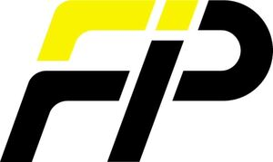

Trade Mark Journal No.2025/036 5 September 2025
WO0000001858338 (11,12,17,42)
Office of origin: Germany
Date of International Registration:5 August 2024
Date of designation in the UK:
5 August 2024

The mark contains the colours black and yellow.
International priority date claimed: 4 March 2024
(Germany)
- Class 11
- Plug connections made of plastic and plug systems consisting essentially of plastic for connecting cooling lines as parts of cooling systems for vehicles, not being parts of engines or motors; fluid lines for cooling systems as adapted parts of automobiles; pipes adapted to heating, cooling, drying, steam-generating, ventilation and water-conducting appliances, in particular line pipes made of plastic and composite line pipes made of plastic with a metal insert, in particular a layer of aluminum; pipe coils [parts of heating, cooling or distillation systems]; apparatus for heating, cooling, drying, steam-generating, ventilation and water-conducting.
- Class 12
- Cable protection containers as parts of motor vehicles; fastening and connecting materials as parts of motor vehicles; cables adapted to cooling systems in battery electric vehicles; connectors and connecting pieces made of rubber or plastic, in particular connectors, adapted to hose systems of vehicle cooling systems, namely for heaters for automobiles.
- Class 17
- Flexible pipes, tubes, hoses and fittings therefor (including valves), and fittings for rigid pipes, all non-metallic; corrugated and plain pipes of rubber or plastics for cooling systems; pipes and hoses of plastics, in particular for electrical installations and for conducting cables; insulating, insulating and barrier materials, in particular glass silk fabric hoses; polyester knitted hoses; polyamide hoses; composite pipes made of plastic with a metal insert, in particular a layer of aluminum, hoses made of plastics, rubber and rubber substitutes; pipe sleeves and fittings, all not of metal; rubber sleeves for the protection of machine parts; rubber rings; insulating tapes; winding tapes for insulating and sealing purposes; adhesive tapes and strips [self-adhesive or not self-adhesive] other than for medical purposes; seals, weatherstripping compositions, caulking materials, water-tight rings and draught excluder strips [included in this class]; plastic sheeting [self-adhesive and non-self-adhesive] for technical purposes; sealing and packing materials; insulators and insulating materials [electric, heat, sound]; soundproofing materials; filtering material [semi-finished plastic or foam products].
- Class 42
- Technical project studies; research in the field of technology and mechanical engineering; technical development of new products [for third parties]; all technical consultancy services in the field of engineering technology of pipes, tubes and cables; research in the field of technology, in particular building services; construction drafting; preparation of technical expert opinions; services of a technical measuring and testing laboratory; scientific testing services, including the preparation of technical expert opinions; performance of scientific research and investigations; engineering services; services of a physicist; services of a chemist; services of a computer programmer; building project management [construction drafting, design and planning].
Fränkische Industrial Pipes GmbH & Co. KG
Representative: Weickmann & Weickmann Patent- und Rechtsanwälte PartmbB, Richard-Strauss-Straße 80, 81679 München, GERMANY